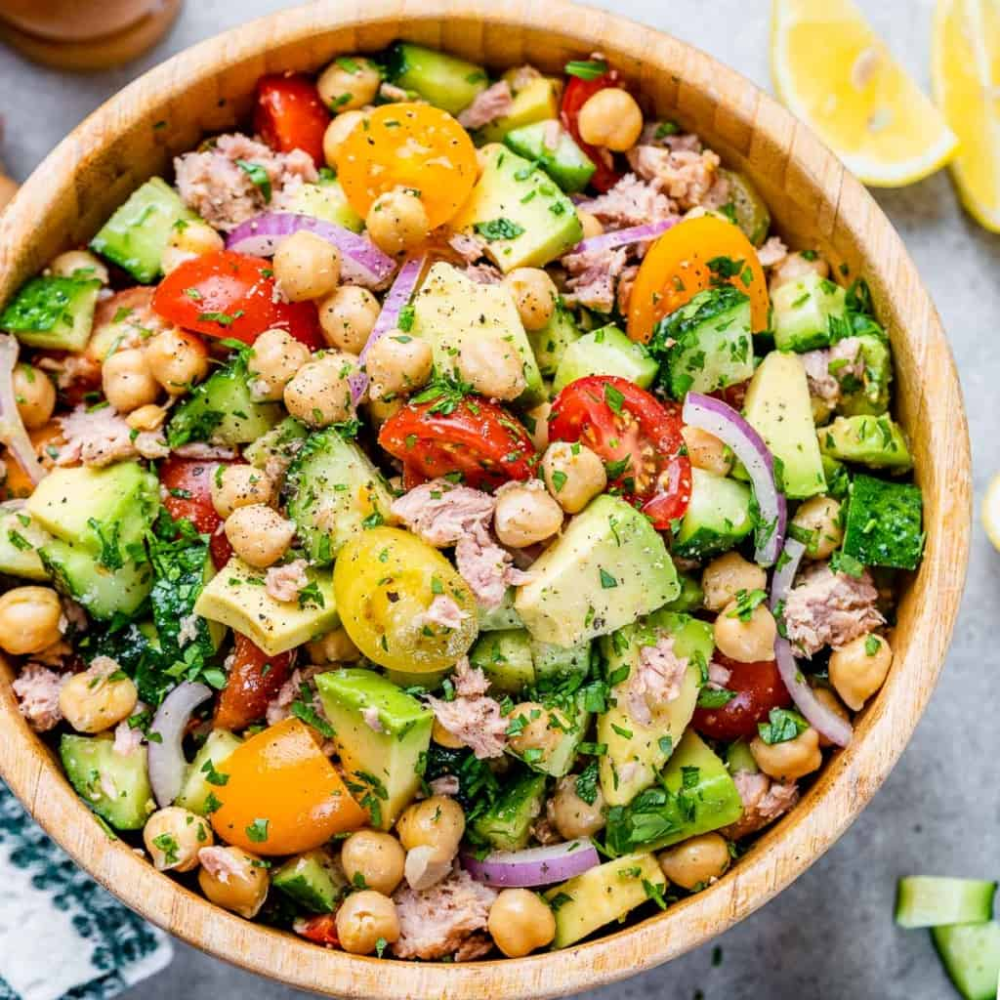

Chickpea Tuna Salad

A bowl of canned tuna with colorful veggies can never go wrong, specially when we want something more refreshing.
Ingredients:
Amounts are not specified, so add the amount of vegetables you like better.
- A can of tuna.
- Cooked chickpeas.
- Avocado.
- Red onions.
- Cucumbers
- Tomatoes, any kind.
- Lemon juice.
- Salt and pepper to taste.
Steps:
- Drain the tuna and place it in a big bowl.
- Chop all of the vegetables in medium or small dice size.
- Pour all of the vegetables; except the avocado, and the chickpeas in the bowl with the tuna.
- Add salt, pepper and lemon juice, and mix.
- When the desired flavor is acquired, serve and add the avocado to each serving.
- Lastly... Enjoy!
Go to Home Page.